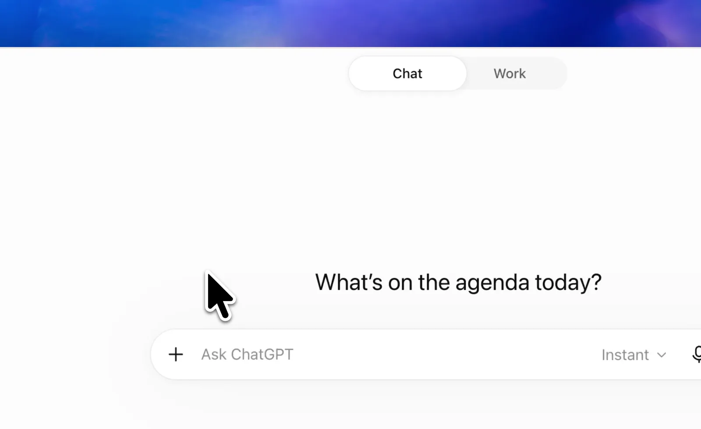

このページで
はじめるための文をコピーする
AIに「一つずつ聞いて、今日の用事を表にして」とお願いする文です。
何も書き加えず、ボタンを押すだけで大丈夫です。
コピーする文を読む・手動で選ぶ
読む・選ぶための欄です。そのままコピーして使えます。
仕事にも、学業にも、暮らしにも。
何を書けばいいか、わからなくても大丈夫。
用事を表にまとめて、今やる一つを決める。
終わったら、同じ会話でチェックを増やしていきます。
このサイトは無料。登録・教材のダウンロードは不要です。
ChatGPTアプリの導入・ログインが必要です。
6月10日 9:00
まず、これから
出欠人数を集計する11:30の締切までに、30分を確保。
今日のうちに相談
明日の照会を、誰が引き受ける？明日は不在。担当と引受の返事を確認。
確認してから決める
「なるべく早く」は、いつまで？期限を決めつけず、依頼元に聞く。
難しい設定はいりません
質問には、一つずつ答えればOK
AIの答えは、自分で確かめる
LET’S START
最初に全部を説明しなくて大丈夫。
空欄を埋めず、そのまま送って始めます。
写真などへのアクセス許可は、その機能を使うときに内容を確認してください。最初にすべての権限を許可する必要はありません。メールやカレンダーをつながずに始められます。
この教材では、GPT-6 Sol（表示例：6 Sol）＋ Mediumをおすすめします。優先順位の整理と待ち時間のバランスを考えた、教材としての提案です。毎回設定を変える必要はありません。

画像を押すと拡大 ↗設定の見方（図解）
PowerAdvanced
これは操作の図解です。実際の画面を再現した画像ではありません。
スマートフォンでは設定の場所や表示が異なる場合があります。選べるモデルや項目は、プラン・端末・組織の設定によって変わります。見当たらなければ公式のモデル案内と操作見本（別のタブで開きます）を確認してください。
文の中で「モデルは6」と伝えても設定は変わりません。このサイトから自動で切り替えることもできないため、アプリの表示で確認します。
詳しいモデル設定手順 ↗このページで
AIに「一つずつ聞いて、今日の用事を表にして」とお願いする文です。
何も書き加えず、ボタンを押すだけで大丈夫です。
読む・選ぶための欄です。そのままコピーして使えます。
ChatGPTアプリで
ChatGPTアプリで「ChatGPT → Work」を選び、新しい会話を開きます。最初は画像つきの設定手順を見ながら「6 Sol・Medium」を確認し、コピーした文をそのまま貼り付けて送信してください。
アプリで続ける（開き方）ホーム画面やアプリ一覧からChatGPTのアイコンを選び、アプリを開いてください。パソコンではスタートメニューやアプリケーション一覧からも開けます。
Workで新しい会話を作り、コピーした文を貼り付けます。起動の確認をキャンセルした場合も、アプリを自分で開いて続けられます。
まだアプリがない場合は、上のアプリを用意する手順をご覧ください。
貼り付けの操作 パソコンは Ctrl + V（Macは ⌘ + V）。スマートフォンは入力欄を長押しして「ペースト／貼り付け」。貼り付けたあと、送信ボタンを押してください。
AIから質問が返ってきたら
使う場面などを、AIが一問ずつ聞きます。選択肢が出たら番号でも、短い言葉でも答えられます。答えたくないことは「あとで」、不明なら「わからない」で進めて構いません。
用事がわかったら、まず暫定の優先順位表を作ります。「今の一件」が終わったら、同じ会話に「Aが終わった」と送ります。AIがその行を☑にし、完了数・更新した表・次の一件を返します。
進めるために必要なら、AIが「Aの依頼メールを1件」「締切部分のスクリーンショット」のように、次に渡す資料を具体的に案内します。使ってよい範囲だけを渡し、余計な名前・メールアドレス・住所などは隠してください。
ONE AT A TIME
実際の更新は、ChatGPTで完了を伝えたときに行います。次の見本を操作しても、会話には反映されません。
| 順番 | ID | 状態 | 用事 | 期限 |
|---|---|---|---|---|
| 1 | A | 出欠人数を伝える | 今日 11:30 | |
| 2 | B | 書類を提出する | 今日 15:00 | |
| 3 | C | 資料を読む | 明日 17:00 |
0 / 3件完了。見本の次の一件：A「出欠人数を伝える」。
この見本には保存機能がなく、再読み込みで元に戻ります。実際の用事・ChatGPT・メモには反映されません。
メモへの保存は任意です。同じChatGPTの会話だけでも進められます。ChatGPTとメモは自動同期しないので、メモだけにチェックを入れた場合も、更新したい会話に完了を伝えてください。
AIへの指示と架空の予定をまとめた文をコピーし、ChatGPTのWorkで新しい会話を開き、そのまま貼り付けて送ります。
実在する人・職場・家庭の事例ではありません。
答えの書き方は毎回少し変わります。次のポイントを満たしているか見ます。
Aの集計30分を11:30までに確保し、10:00〜11:00の予定を避ける。来月締切のBも、消さずに残す。
今日中に担当を相談する。候補者がいるだけで「引受済み」や「連絡済み」にしない。
「なるべく早く」の期限を勝手に作らず、期限・影響・作業内容を確認する。
修正依頼を同じ会話に貼り付けて、回答を見直します。
YOUR EVERYDAY TOOLBOX
場面を選んで、そのままコピー・送信。
次に何を渡すかも、AIが案内します。
実際の情報を使う前に、所属先や家族とのルールを確認。入力してよい情報を、必要な部分だけ渡してください。
用事の一覧や思い出せる1件を渡すと、まず今日の優先順位表を作ります。固定のIDを使い、同じ会話で完了のチェックを増やしていきます。
文をそのまま送信 → 用事を渡す → 表の「今の一件」を進める → 同じ会話へ「Aが終わった」。
空欄への記入は不要です。表示された文をそのまま送れます。
AIから聞かれたら、使いやすい方法を選びます。送る先はこのサイトではなく、ChatGPTアプリです。
画像を送る前に、必要のない名前・メールアドレス・住所などを隠してください。小さい文字や見切れた部分は読み間違うことがあります。読めない箇所やあいまいな文字は、AIから確認してもらいます。AIが示した内容も、元の画面と見比べてください。
AIの提案をもとに、関係する人と期限や分担を相談。決まった内容は、いつもの予定表や共有メモにも残しましょう。
コピーの手間を減らしたくなったら、Gmail・Googleカレンダーを連携できます。最初は連携なしで大丈夫です。接続はこのサイトではなく、ChatGPTの中で行います。
読み取りを頼むときは「送信・既読変更・予定作成や削除・招待はしない」と添えてください。ただし、この指示は操作を技術的に禁止する仕組みではありません。
連携だけで全件の同期・自動監視・リマインダーが始まるわけではありません。非対応や管理者の制限で使えない場合も、手動のコピー・貼り付けで続けられます。
BEFORE YOU SEND
AIが整えた文章にも、
見落としや思い違いがあるかもしれません。
最後は、実際のメール画面で確認します。
このチェック欄は確認の手助けです。正確さを自動判定したり、メールソフトの送信を止めたりする機能はありません。
確認できない項目があれば、下書きに戻しましょう。
A FEW QUESTIONS
始める前の疑問を、少しだけ。
大丈夫です。このページで文章をコピーして、ChatGPTに貼り付ければ始められます。GitHubのアカウント、教材のダウンロード、APIキーは必要ありません。ChatGPTアプリは別途用意してください。
教材の元データはGitHubで公開していますが、普段はこのページだけで使えます。
スマートフォンでは、ボタンから開き方の案内へ進みます。ホーム画面のChatGPTアイコンからアプリを開き、Workで新しい会話を開き、コピーした文を貼り付けてください。
パソコンで起動の確認が出たら、アプリを開く操作を選びます。開かなければ、アプリ一覧から手動で開いて続けられます。詳しい開き方とインストール案内もご覧ください。
「わからない」「あとで」と答えて構いません。難しい質問が続いたら、「一度に一つだけ、短い例か選択肢を出してください」と伝えてください。返事の文をコピーすることもできます。
対応できる時間や相談先を最初に全部そろえる必要はありません。今ある用事の一覧や1件から始め、必要なことだけを一つずつ確認します。
この教材では、WorkでGPT-6 Sol（6 Sol）とReasoning effortのMediumを選ぶことを提案しています。優先順位の整理と待ち時間のバランスを考えた設定で、毎回変える必要はありません。実画面と図解の設定手順を見ながら確認できます。
選択肢はプラン・端末・組織の設定で変わります。プロンプトに「モデルは6」と書くだけでは設定されず、このサイトからの自動切り替えもできません。
まずは利用できるChatGPTの環境で、はじめ方の案内や架空の例を試してください。継続して使うならPlusを選択肢にできます。所属先が用意している環境があれば、先にそちらを確認しましょう。
このサイトの教材は無料です。ChatGPTの有料プランは別の契約で、料金や利用条件は公式の料金案内（別のタブで開きます）と契約画面で確認してください。課金だけで回答の正しさが保証されるわけではありません。
表を作った同じChatGPTの会話で、「Aが終わった」のように固定IDか用事の名前を伝えます。AIが完了の☑・完了数・更新した表・次の一件を返します。終わった行も残るので、進んだことを確認できます。
メモへの保存は任意です。保存する場合は表の枠内をコピーし、メモ帳やメモへ貼り付けてください。会話とメモは自動同期しません。必要なときに最新版へ貼り替えます。メモに置いておく手順
このページのコピーボタンには、AIへの共通指示も含まれています。Workで新しい会話を始めるときは、そのまま貼り付けて始められます。同じ会話で続ける場合も、予定や進捗の変化は自分で伝えてください。
慣れたら、ChatGPTのProjectsに共通指示をまとめる方法もあります。Projectsの公式案内（別のタブで開きます）を参照してください。skillsは対応する環境向けの追加の方法で、この使い方には不要です。
所属先のルールと、使うAI環境の条件を確認してください。許可のない情報を個人契約のAIへ入力せず、必要な部分だけに絞ります。名前だけ変えても、案件名や日時の組み合わせから相手がわかることがあります。
このページには実際のメールや予定を入力する欄はありません。スクリーンショットも、必要のない名前・メールアドレス・住所などを隠し、許可された範囲だけをChatGPTに渡します。迷う場合は架空の例で練習してください。
この教材は、用事の整理と文章の下書きを助けるものです。この手順だけでメール・カレンダーの監視、通知、送信は始まりません。新しい依頼は自分でChatGPTに伝え、連絡や担当の確定は関係する人と行ってください。
上手に頼むことも、
ひとつずつ覚えればいい。